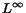

Next: Material Interfaces
Up: Approximating Material Interfaces during
Previous: Related Work
A multiresolution framework for simplifying numerically simulated data
needs to be a fairly robust and extensible system. It must be capable of
supporting the wide
range of possible input structures used in the simulations and the wide range of output
data generate by these simulations. The following properties and
operations are desirable for such a framework:
- Interactive transition between levels of detail. The
ability to quickly move between different levels of detail allows the
user to select a desired approximation at which to perform a
calculation (for a visualization application). Since the level of
detail is directly related to the approximation error, the user can
balance computation time and accuracy.
- Strict  error bounds. Strict error bounds prevent small yet
important features from being averaged or smoothed out by the simplification process.
- Local and adaptive mesh refinement and local error
computations. Local mesh refinement and computations allow the
representation to be refined only in the areas of interest while
keeping areas of little interest at relatively lower resolutions.
This is essential for maintaining interactivity and strict cell count
on computers with limited resources. Local error computations are
needed for efficiency. Considering data sets consisting of millions
or billions of cells, the error calculations should not involve a
large amount of original data.
- Accommodating different meshes. Computational
simulations are done on a large variety of mesh structures, and it is
cumbersome to write a multiresolution algorithm for each specific
structure. In order for a framework to be useful it should be easily
adaptable to a broad class of input meshes.
- Explicit representation of field and/or material
discontinuities. Discontinuities are very important in scientific
data sets and very often need to be preserved within a certain
tolerance during data simplification. A multiresolution framework
should support the explicit representation and approximation of these
discontinuities for the different resolution levels.
Our multiresolution recursive tetrahedral framework satisfies these
design criteria. Tetrahedral cells are the simplest of the polyhedral
cells. This allows us to use linear basis functions to approximate the
material interfaces and the dependent field variables in a cell.
Since our data structure is defined recursively as a binary tree, a
representation of the original data can be computed in a preprocessing
step, and we can utilize methods developed for the ROAM system
[3] to efficiently select a representation that
satisfies an error bound or a desired cell count. This makes the
framework ideal for interactive display. Strict error
bounds are incorporated into the subdivision process, see
[3]. The framework supports various input meshes by
resampling them at the vertices of the multiresolution tetrahedral
grid. Discontinuities are supported at the cell level allowing local
refinement of the representations of surfaces of discontinuity in
geometrically complex areas.
The framework has several advantages over other multiresolution
spatial data structures such as an octree. The way we use the binary
subdivision method ensures that the tetrahedral mesh will always be a
conformant, i.e, all edges in the mesh end at the endpoints of other
edges and not in the interior of edges. This ensures that cracks and
T-intersections will not occur anywhere in the mesh. A conformant
mesh makes it easy to guarantee that representations of fields and
surfaces of discontinuity are continuous across cell boundaries.
Our resampling algorithms and error bounding algorithms require that an
original data set allow the extraction of the following information:
- The values of the field variables at any point.
- The maximum difference between our representation for a given
field over one of our cells and the representation of the same field
over the same volume in the original dataset
Next: Material Interfaces
Up: Approximating Material Interfaces during
Previous: Related Work
Ben Gregorski
2000-05-15